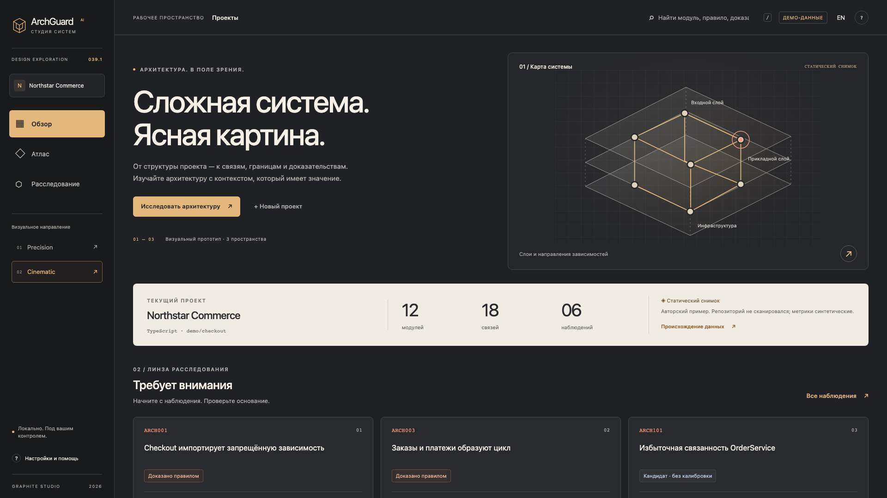
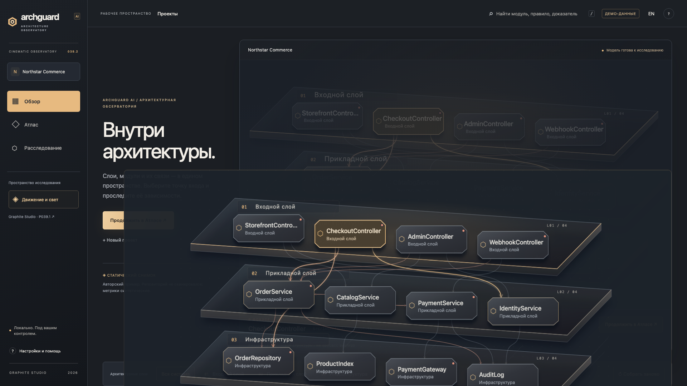

Объём объясняет иерархию.
Торцы платформ, контактные тени и устойчивые подписи разделяют уровни архитектуры.
Единая пространственная система: объёмные слои, конечная сборка, фактические зависимости и свет, который объясняет связь.
DESKTOP · 1280×800 / 1440×900 / 1920×1080 / 2560×1440Сборка, световые потоки, смена слоя, камера, evidence и возврат к обзору. Реальная запись Chromium. Статические связи, не runtime execution.
Выберите область сравнения. Снимки созданы в браузере из двух сохранённых версий; каждый открывается в полном размере.


Статичная иллюстрация становится интерактивной моделью dataset: сборка, выбор слоя и модуля, сохранение контекста при входе в Atlas.
Торцы платформ, контактные тени и устойчивые подписи разделяют уровни архитектуры.
Головка и затухающий след следуют одному SVG path; подсвечивается его фактическая цель.
Сборка и flow конечны. Доступны replay, уменьшение интенсивности, отключение и reduced motion.
Узнаваемый нижний регистр и вложенная геометрия из Deluxe v1 — в новом материале. Бренд изменён только в showcase.
Dark / light / application icon ↗